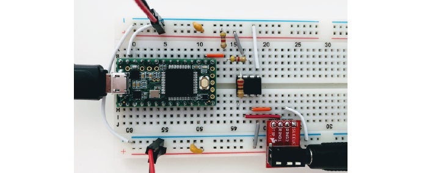

Exercises Day 4 TA#
Bonsai#
Bonsai is a visual reactive programming language. It’s great for data acquisition, because it can easily deal with multiple datastreams.
Many of these exercises were adapted from from Neurogears @ Wustl19, https://neurogears.org/wustl-2019/worksheets/acquisition/
Download and install Bonsai#
Download Bonsai from http://bonsai-rx.org.
Install Bonsai - Starter Pack from the package manager (Tools/Manage Packages/)
Video Acquisition#
Bonsai can be used to acquire and record data from many different devices. The first data type we will discuss is an image, which is represented as a 2D matrix of pixels. Each pixel represents either a brightness value in a grayscale image, or a BGR colour value in a colour image.
Insert a CameraCapture source.
Insert a VideoWriter sink.
Configure the FileName property of the VideoWriter operator with a file name ending in .avi.
Run the workflow and check that it generates a valid video file.
Audio Acquisition#
Audio data is captured at much higher temporal sampling frequencies than video. However, the data is typically buffered into chunks of multiple samples before being sent to the computer. Also, multiple audio channels can be acquired simultaneously in the case of a stereo microphone, or high-density ephys probes. For this reason, such multi-sample, multi-channel data is also typically represented as a 2D matrix of amplitude values, where rows represent channels, and columns represent time.

Insert an AudioCapture source.
Insert an AudioWriter sink.
Configure the FileName property of the AudioWriter operator with a file name ending in .wav.
Make sure that the SamplingFrequency property of the AudioWriter matches the frequency of audio capture.
Run the workflow for some seconds to record a file.
Exercise 3: Trigger an auditory stimulus#

Insert an AudioReader source.
Configure the FileName property to point to the audio file you recorded in Exercise 3.
Insert an AudioPlayback sink.
Run the workflow and check that the sound is played correctly.

Insert a KeyDown source (Windows.input).
Set the BufferLength property of the AudioReader to zero, so that all audio data is read into a single buffer.
Combine the key press with the audio data using the WithLatestFrom combinator.
Right-click the WithLatestFrom operator. Select Output > Item2 from the context menu.
Move the AudioPlayback sink so that it follows the selected Item2 member.
Run the workflow and press a key. What happens if you press several keys?
Digital Output#
Upload StandardFirmata to your teensy in the Arduino software (File/Examples/Firmata/StandardFirmata)
In Bonsai: Insert a Boolean source.
Insert a DigitalOutput sink.
Set the Pin property of the DigitalOutput operator to 13. This is the LED pin of the teensy- it turns on the LED that is already attached to the board.
Configure the PortName property to the COM of your Teensy.
Run the workflow and change the Value property of the Boolean operator to toggle the LED on the Teensy on and off.
Optional: Change the output pin to pin 12. Connect an LED and a resistor in series to this pin through the breadboard and turn the LED on with Bonsai. The LEDs in your kit have three pins, you can treat them as a normal LED by leaving one of the short pins unconnected.
Analog Inputs#
Make sure StandardFirmata is still running on your Teensy
In Bonsai, insert an AnalogInput node and configure it to Analog Pin 9.
Run the workflow and tap the pin on the Teensy.
Use the GreaterThan node to create a ‘touch detector’ that gives a 1 each time you tap the teensy.
Run the workflow and tap the pin on the Teensy. What do you see?
This workflow is detecting each sample.
Use the ‘Buffer (Dsp)’ and ‘Average’ nodes to run the detection over more than 1 sample. You will need to output only the first value from Average (it will by default return 4 values, and then the other nodes won’t work as they can only receive 1 value.) Do this by right-clicking on Average/Output/Val0.
Run the workflow and tap the pin on the Teensy.
Workflow here:

EMG into PC#
Use the breadboard circuit you built yesterday. Instead of reading the EMG using the PicoScope, we will feed the signals to our PC through the Teensy microcontroller.
Shifting the signal#
The EMG signal is from -3 to +3V, because of the battery rails we built. However, the Teensy can only digitize positive voltages. With a simple trick we can shift the signal that comes out of the amplifier from -3 to 3V into the 0-3V range we want, while still allowing the amplifier to detect the full -3 to +3V range.

This voltage divider is not going to mess with our signal, because the signal is protected by the amplifier. You could use almost any reasonable values for R, over 1kΩ, because the output impedance of the instrumentation amplifier is low and the input impedance (of the Teensy analog input) is decently high. If you make R too small, this will still work on paper, but you’re now asking the op-amp to keep shovelling current into ground (or in this case, the 3V rail) through a small resistance, and eventually even an op-amp will not be able to provide enough current to do so.
Streaming data from the microcontroller#
We’re going to start streaming data to the PC, by using our Teensy microcontroller to digitize the analog signals we collect.
Connect the output from the amplifier to an analog input pin on the Teensy. Make sure that output goes through a voltage divider that divides it in two.
Shown is a 220 Ohm resistor across the instrumentation amplifier, and a voltage divider made of two equal resistors (anything above 1KOhm, see the text on ‘shifting the signal’ ).

Open Bonsai and create an Analog Input node. Double-click this node to visualise your signal.
Connect this to a ‘Csv Writer’ node to save your signals.
With two equal resistances, this voltage divider is splitting the difference between the instrumental amplifier output and +3V in two.
For low amplitude values of our amplified signal, say -2.6V, the difference is 5.6V and thus it adds 2.8V to -2.6V giving a voltage divider output of +0.2V.
For large amplitude values of our amplified signal, say +2.6V, the difference is 0.4V and thus it adds 0.2V to +2.6V, giving a voltage divider output of 2.8V.
Our signal is thus transformed to the 0.2-2.6V range, ready for the digitizing pin of the Teensy. Simulator to show this in action: https://tinyurl.com/yyv98thr
There are lots of different Firmata scripts they can use, as long as they know the acquisition frequency as this will be important for filtering later on in Bonsai.
C-D. Example Bonsai workflows are here:
https://github.com/ahleighton/eeamay2022/tree/main/source/_static/ex_code
Including one that will detect EMG crossing a threshold (parameters will need adjusting) and activate an LED. see: emg_led_standardfirmata